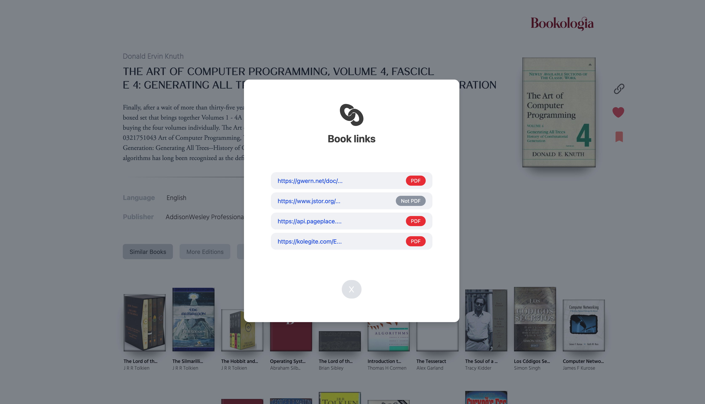
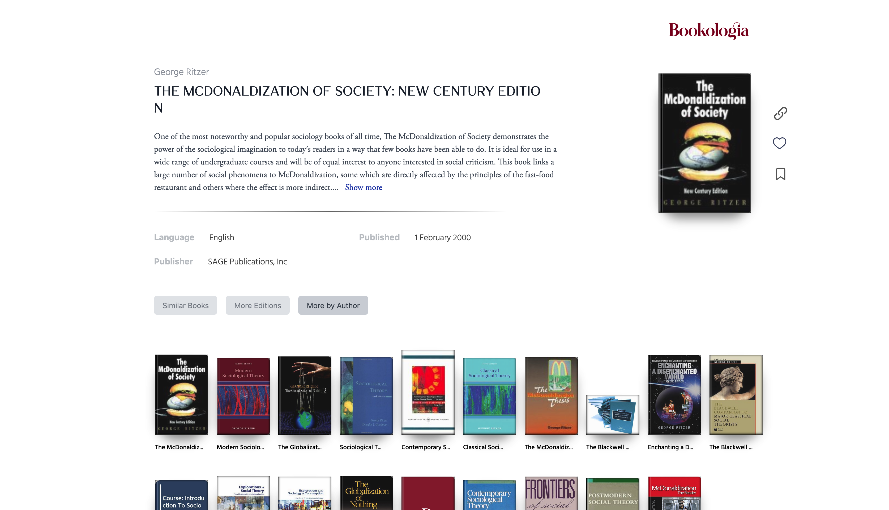
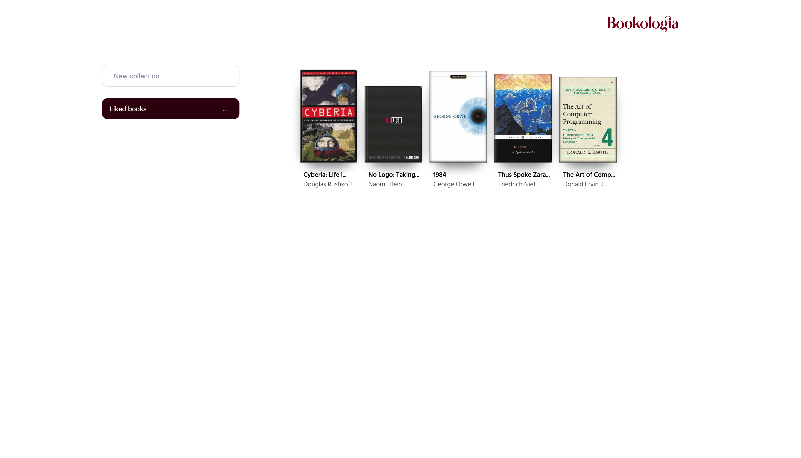
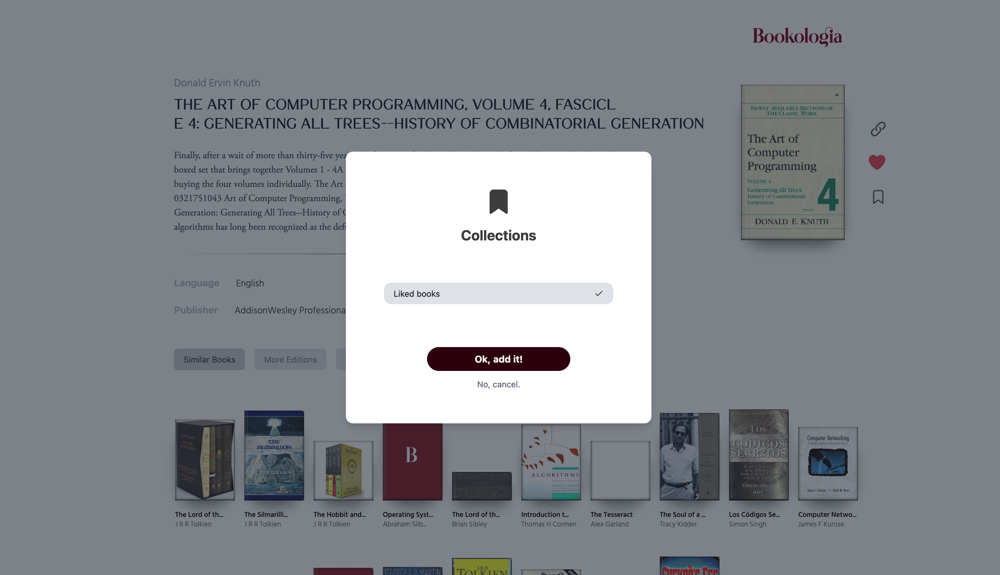
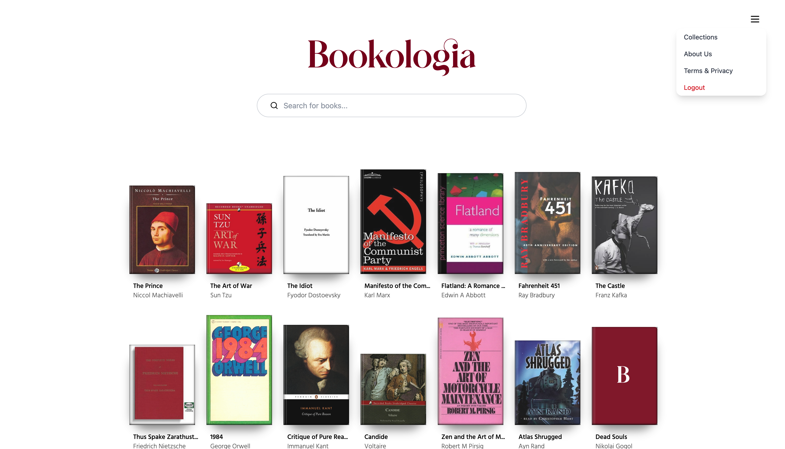
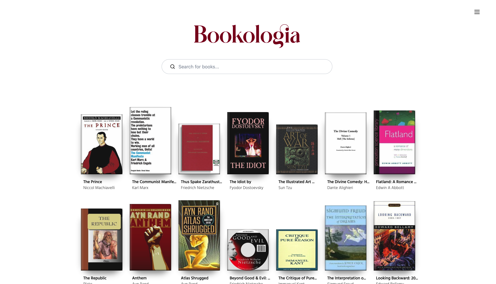
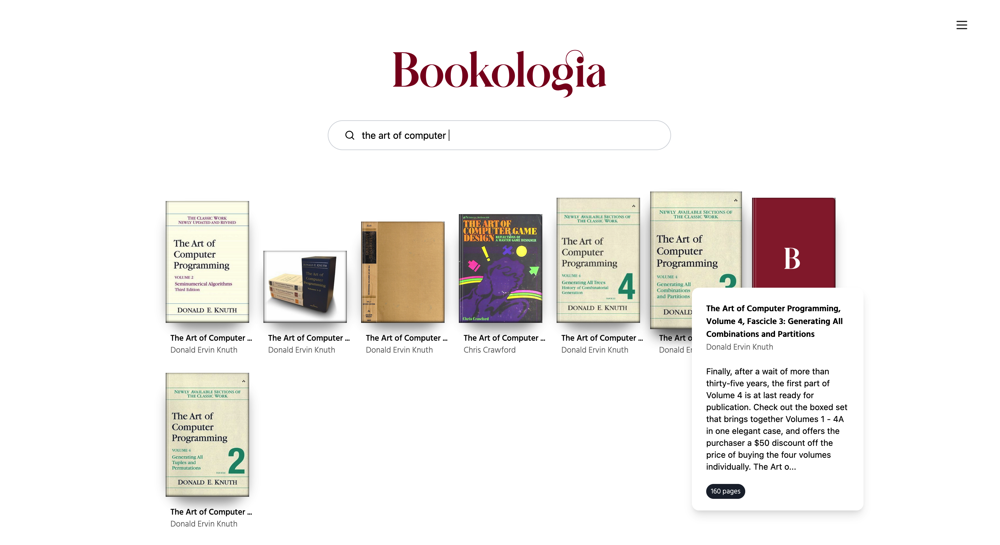
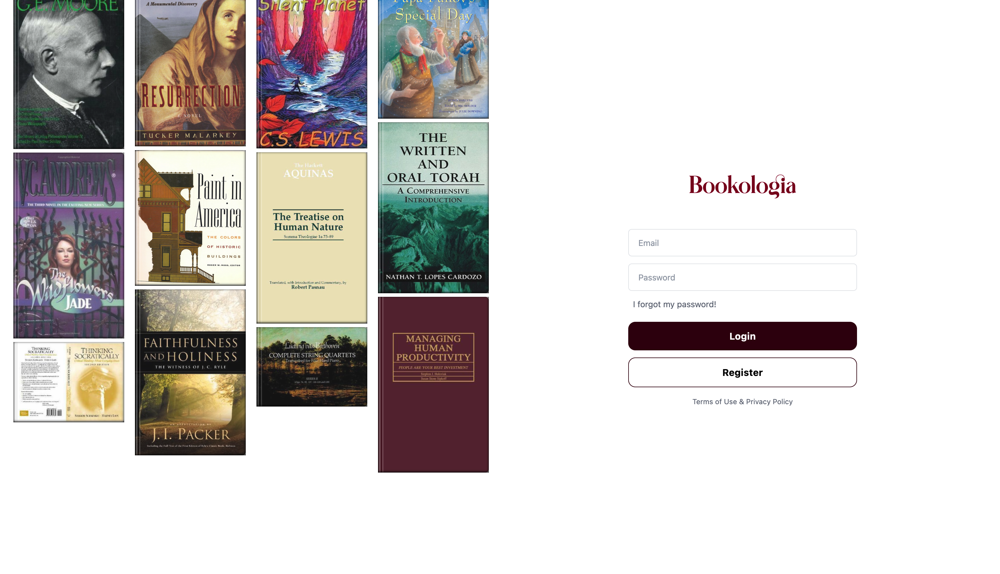

The right words find you.








Bookologia is a specialized search engine, to find any book within seconds. It is open source, and can
be self-hosted easily on Docker.
Now, why were we interested in creating this project?
We believe there was a misunderstanding of the book market online, and a proof of that, none of the book platforms in the last 20 years were successful. They were shaped around the idea that people would read books and talk about them with others. Yet, every time a new project was launched, it was met with an insufficient market for growth.
That is because they targeted the wrong audience. People who read books for entertainment, are not the ones who search for them. The people who search for books are called: Knowledge workers. Engineers, doctors, lawyers, marketers... they use bits of information from here and there to find solutions to problems they have in hand. Most of the books they deal with are technical and specialized. They do not read the books, they browse them.
In such a market, you cannot simply sell books, yet these people are the total majority of those consuming them. Hence why profitability in this market is not possible, and only a public library model would work.
How does Bookologia work?
Bookologia is a specialized search engine. Which means, it queries Google and other search engines on your behalf, retrieves the links related to the book in question, analyze them, and present them to you. Our value proposition is the organization of books in such a way that you know a lot about a book before even opening it. The editions, other works by the author, and recommended similar ones picked carefully.
A scraper engine is provided as well, to add as much meta-data to your library as you wish, or missing books that you need to catalogue. All self-hosted locally.
See documentation for more details.
Who created this project?
We are Blank Research. An industrial research company. Our job is to conduct applied research to develop new products, processes and technologies for commercial use. We help startups build their products, and estblished companies to innovate new markets.
Main founding engineer is : Youssef (yousbot).
Find more details about us visiting : https://blankresearch.com
Now, why were we interested in creating this project?
We believe there was a misunderstanding of the book market online, and a proof of that, none of the book platforms in the last 20 years were successful. They were shaped around the idea that people would read books and talk about them with others. Yet, every time a new project was launched, it was met with an insufficient market for growth.
That is because they targeted the wrong audience. People who read books for entertainment, are not the ones who search for them. The people who search for books are called: Knowledge workers. Engineers, doctors, lawyers, marketers... they use bits of information from here and there to find solutions to problems they have in hand. Most of the books they deal with are technical and specialized. They do not read the books, they browse them.
In such a market, you cannot simply sell books, yet these people are the total majority of those consuming them. Hence why profitability in this market is not possible, and only a public library model would work.
How does Bookologia work?
Bookologia is a specialized search engine. Which means, it queries Google and other search engines on your behalf, retrieves the links related to the book in question, analyze them, and present them to you. Our value proposition is the organization of books in such a way that you know a lot about a book before even opening it. The editions, other works by the author, and recommended similar ones picked carefully.
A scraper engine is provided as well, to add as much meta-data to your library as you wish, or missing books that you need to catalogue. All self-hosted locally.
See documentation for more details.
Who created this project?
We are Blank Research. An industrial research company. Our job is to conduct applied research to develop new products, processes and technologies for commercial use. We help startups build their products, and estblished companies to innovate new markets.
Main founding engineer is : Youssef (yousbot).
Find more details about us visiting : https://blankresearch.com
Source Code:
Docker image (Flask App):
Docker image (Elastic Search):
Database Raw Dataset:
Maintainer:
Blank Research: